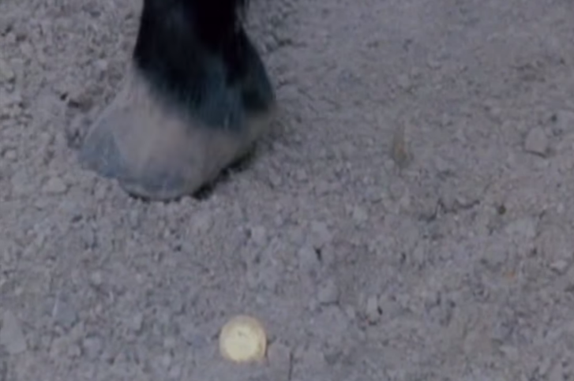

heads.
Ellisa Barnett
Colby Brown
Francine Lapid
Jake Metzler
Rosencrantz and Guildenstern are Dead
is centered around themes of
death, ambiguity, and the search
for identity in a predestined world.

I wonder what keeps us so high up,
Could there be love beneath these wings?
If we suddenly fall should I scream out,
Or keep very quiet and cling to my mouth as I'm crying
So frightened of dying
Relax, yes, I'm trying
But fear's got a hold on me.
Yes, this fear's got a hold on me.
Death by White Lies
Yet Again by Grizzly Bear
Shell with another crack
I'm small but I can keep track
Too soon everyone just step away
I'm sure this isn't the last play
Take it all in stride
Speak don't confide
We barely had a case
It's done before we try
Stop and end by night
A desert in your face
There's a light in the bedroom
But it's dark
Scattered around on the floor
All my thoughts
This is just another night
And we've had many of them
To the morning we're cast out
But I know I'll land here again
How am I gonna get myself back home?
Ay-ay, ay-ay, ay-ay
How am I gonna get myself back home?
Ay-ay, ay-ay, ay-ay
Get Home by Bastille
Doubt Comes In by Anais Mitchell
ORPHEUS & FATES
Doubt comes in
And kills the lights
Doubt comes in
And chills the air
Doubt comes in and all falls silent
It's as though you aren't there
Where are you? Where are you now?
EURYDICE
Orpheus
You're shivering
Is it cold or fear?
Just keep singing
The coldest night
Of the coldest year
Comes right before the spring
Waves crash along
The battered, lonely lighthouse
Tomorrow she's gone
And if not, someday somehow
Are these hands a waste
Well this side of mortality is
Scaring me to death
To death
Don't think about it at all
Just keep your head low
And don't think about it all
Soldier On by The Temper Trap

There must have been a moment, at the beginning, where we could have said -- no.
But somehow we missed it.